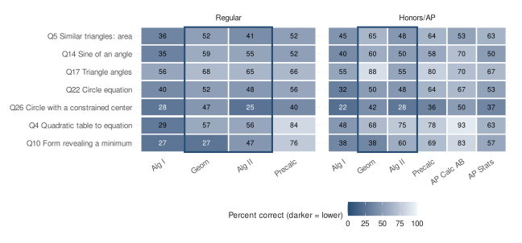

Assessment Intelligence / Logos Education Group
Mathematics program review
A shared view of readiness, from department patterns to the questions behind them.
Designed fictional scenario. One administration, 500 students, 21 classes. These are the same aggregate data and figures used in the Logos report.
Loading assessment evidence...
Department overview
Department priorities
Three questions for review
Common assessment
See the evidence from both sides
30 questions. Four content areas.
Algebra and Advanced Math have ten questions each; Data Analysis and Geometry have five each. The dashboard and report use this exact question order and scoring revision.
Your practice answers stay in your browser and do not change this fictional department dataset.

Follow-through
From findings to action
Original report figure Whole department
Data, methods & interpretation limits
One synthetic administration of LOGOS-MATH-V2, revision 5. Group differences are descriptive and do not establish growth, teacher effectiveness, causal impact, or individual placement suitability. Course and domain percentages depend on the questions and instructional exposure.
Comparison estimates and intervals come from the report. The 22 planned comparisons use their original Holm correction families, including one family of 14 class comparisons. Filtering does not recompute tests. Inconclusive differences do not demonstrate equivalence. Student-level intervals can understate uncertainty when students share a class; the report includes section-cluster sensitivity checks.
Questions attempted is a percentage of item responses, not a student completion or pass rate. The original figures always show the whole department; the table and bars show the selected groups.